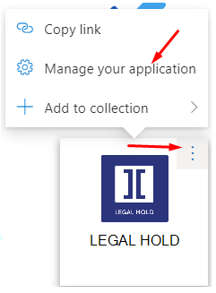
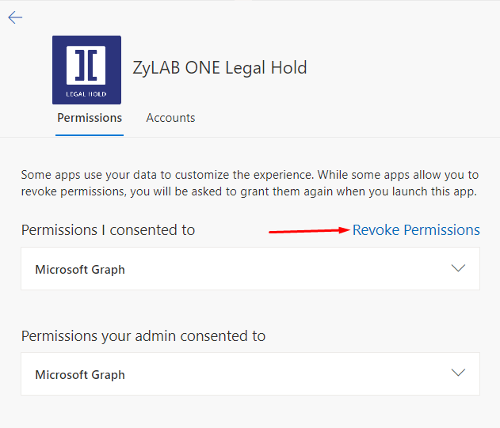

Disable Integration with Microsoft Entra ID
In this topic you'll learn how to revoke consent and disable the AAD integration.
-
Go to https://myapplications.microsoft.com/
-
Find the icon, hover above it and click the three dots in the top right corner.
-
Select Manage your application.

-
Click Revoke Permissions.

-
Wait for couple of minutes. Then, log back in to .
- Check that integrations are disabled.
- For email integration - Enable email integration button should appear in user profile page or any action that would request email integration will ask for consent.
- For user sync integration - User sync button will ask for consent.
-
Please consider the following:
-
This approach will disable all integrations, if you want to disable just one and keep another, please re-enable it after.
-
All processes dependent on revoked user integrations like email send, will fail.
-
If user is the hold owner - please change it.
-
If user was the last who did user synchronization - please do users synchronization via another user or disable it (currently only via support).